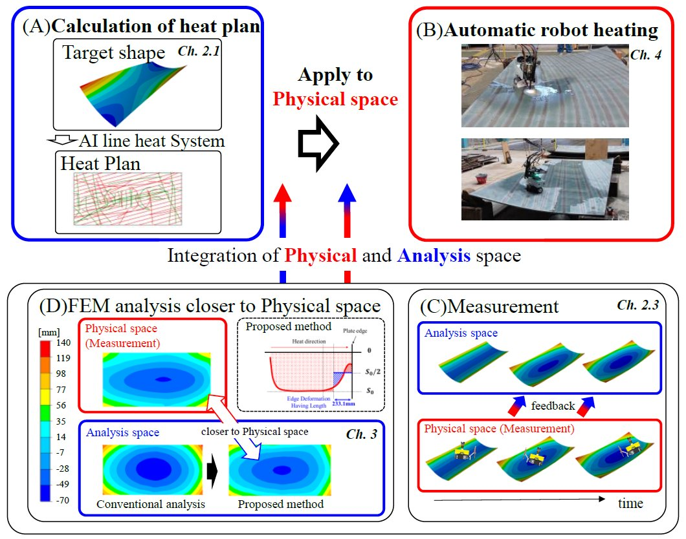
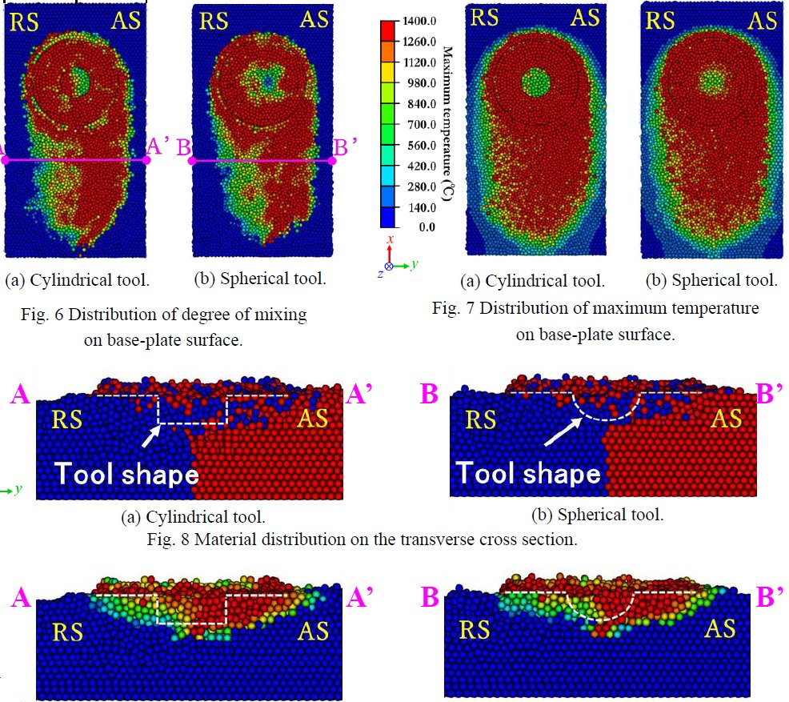
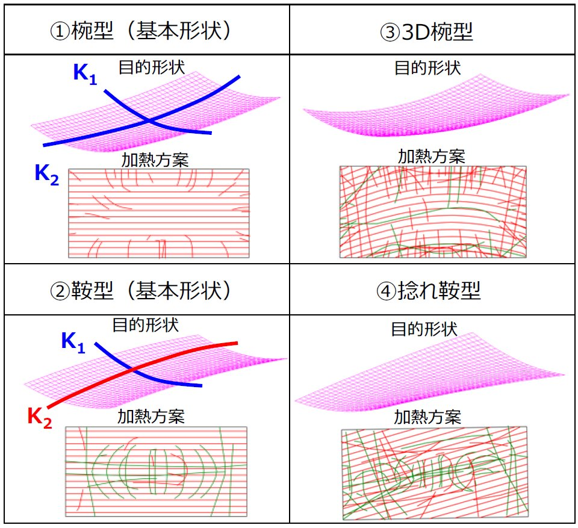
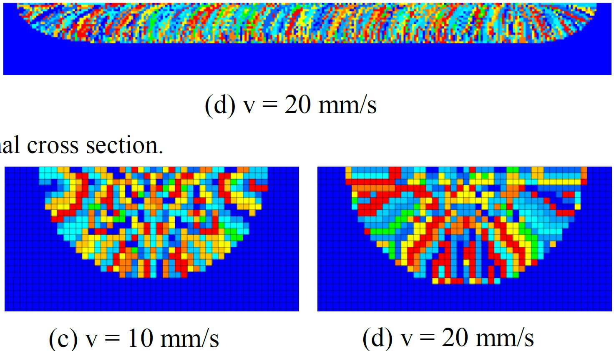

2023.10.06報告
「溶接構造シンポジウム2023」に柴原研究室から15件の講演発表をエントリーしました。
発表は、11月28日(火)、29日(水)の2日間に亘り、大阪大学銀杏会館で行われますので、お手すきの方は、是非ともご参加下さい。
15件の講演内容は以下の通りです。
「冶金学-力学を考慮した高温割れ解析法の開発とその応用」
○前田新太郎、幅田真史、王聞達、生島一樹、柴原正和
「溶接時の柱状晶凝固成長簡易解析手法を用いた溶接凝固割れについての検討」
○前田新太郎、幅田真史、王聞達、生島一樹、柴原正和
「ガス加熱時の入熱パラメータが変形に及ぼす影響」
柴原正和、○手銭永遠、高橋陸、松岡諒、前田新太郎、生島一樹
「逆解析によるガス加熱時の入熱パラメータ推定に関する検討」
○松岡諒、山内悠暉、峰松伸行(日立建機)、前田新太郎、河原充、生島一樹、柴原正和
「並進加熱による高温割れ防止法の提案」
前田新太郎、○兼本拳多、三ッ井佑太、王聞達、生島一樹、柴原正和
「修正熱収縮法の提案とその応用」
○王聞達、幅田真史、手銭永遠、前田新太郎、生島一樹、柴原正和
「発電用プラント配管における溶接熱影響部の余寿命推定に関する検討」
○山内悠暉、松岡諒、木谷悠二、生島一樹、荒井正行(東京理科大)、西田秀高(中国電力)、柴原正和
「摩擦攪拌接合時のツール形状がツール損傷に及ぼす影響に関する数値解析的検討 」
生島一樹、○九鬼正治、山内悠暉、木谷悠二、柴原正和
「AI線状加熱の開発とその応用」
加藤拓也、○廣瀬天空、野津亮、生島一樹、柴原
「AI線状加熱による任意形状自動作成に関する検討」
○加藤拓也、廣瀬天空、前田新太郎、生島一樹、柴原正和
「データ同化技術を用いた配管溶接継手のクリープ損傷デジタルツインシステム」
○木谷悠二、麻寧緒(大阪大学)、山内悠暉、生島一樹、柴原正和
「溶接時の面外変形に及ぼす諸因子の影響に関する力学的検討」
○幅田真史、田中亮匡、前田新太郎、生島一樹、柴原正和
「耐候性鋼材を用いた鋼床板溶接時の終端割れに関する力学的検討」
○永木勇人(高田機工)、手銭永遠、前田新太郎、柴原正和
「 AI線状加熱ロボットを用いた自動加熱システムの構築」
○丹後義彦(JMU)、加藤拓也、廣瀬天空、野津亮、柴原正和
「理想化陽解法FEMを用いた大型鋼構造物の溶接組立シミュレーション」
○橋場大輔(日本製鋼所)、柳沢祐介(日本製鋼所)、本閒祐太(日本製鋼所)、山内悠暉、前田新太郎、生島一樹、河原充、柴原正和




※大阪公立大学 柴原研究室HPより